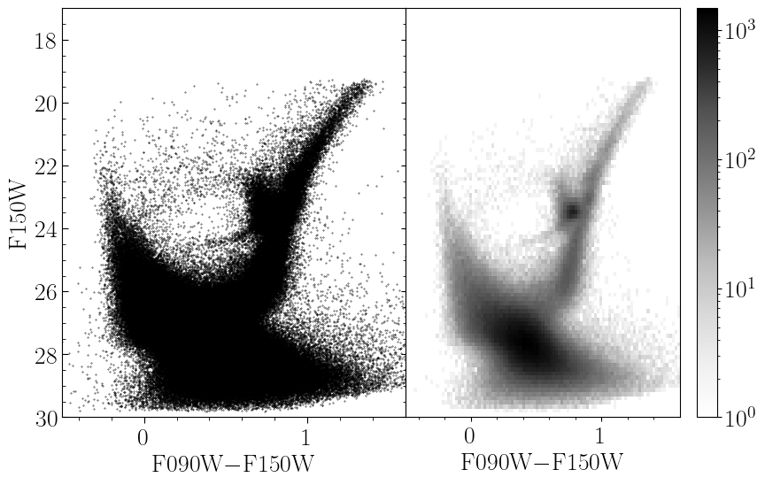

Background and Template Construction
Background
In the classic formulation of star formation history fitting from resolved-star photometry (Dolphin 2002), an observed color-magnitude diagram (CMD) is binned into a 2-D histogram known as a Hess diagram. Such a CMD and Hess diagram pair is shown below.

The representation of the observations as a Hess diagram allows one to apply Poisson statistics, specifically the Poisson likelihood ratio (Equations 7–10 in Dolphin 2002), to model the observations. As the CMD of a complex stellar population is simply the sum of the CMDs of its sub-populations, one need only prepare a number of templates for each simple stellar population (SSP) which may make up the complex population in question and model the observed Hess diagram as a linear combination of these templates. Keeping the same notation as Dolphin 2002 (Equation 1), the complex model Hess diagram is simply
\[m_i = \sum_j \, r_j \, c_{i,j}\]
where $m_i$ is the value of the complex model in bin $i$, $c_{i,j}$ is the value of simple template $j$ in bin $i$, and $r_j$ is the multiplicative coefficient determining how significant template $j$ is to the complex population. In Dolphin 2002, he normalizes the templates to identical star formation rates (SFRs) and so the $r_j$ are SFRs as well. In this package, we prefer to normalize our templates to identical population stellar masses, so our $r_j$ are stellar masses, but the principal is the same.
Construction of the templates is, however, not a trivial exercise. Ideally, a template constructed to represent a particular SSP would accurately reflect the expectation of how such a population would be observed. Thus, these templates must be adjusted for photometric error, incompleteness, and other effects such as those caused by unresolved binary- and multi-star systems. Observational effects such as photometric error and incompleteness are best measured from artificial star tests (ASTs). It is worth mentioning that ASTs can often return "best case" results, as they typically neglect systematics like uncertainty in the point-spread model used for the photometry; as such it is sometimes necessary to add a systematic error floor to photometric error results from ASTs.
Such templates can be constructed by sampling many mock stars from an initial mass function (IMF), interpolating their absolute magnitudes from an isochrone of the relevant SSP, and "mock observing" them by applying photometric error and completeness functions (for example, by looking up the $1\sigma$ photometric error and completeness value from a catalog of artificial stars). Such Monte Carlo templates can be slow to construct and exhibit Poisson shot-noise, requiring a statistical data–data comparison rather than a model–data comparison. Thus this method is non-optimal from both a practical and statistical perspective.
It is better to form what Dolphin 2002 calls a "blurred isochrone;" in this form of template, the SSP isochrone is first interpolated in initial stellar mass to improve the point density along the isochrone. The number of interpolated points is generally a function of the size of the bins in the Hess diagram and the observational error; more points are required as the bin size or photometric errors become smaller. These points are then weighted according to the IMF and the photometric completeness, and this weight is distributed into the Hess diagram following the photometric error distribution determined by similar artificial stars. Dolphin 2002 also mentions interpolating across stellar age/metallicity when constructing such templates; for example, for an SSP with an age of 1 Gyr and a metallicity of [M/H]=-1.0, you could interpolate the isochrones to introduce a Gaussian metallicity spread of 0.05 dex or an age spread of 100 Myr. The general effects of this form of interpolation is to broaden the model templates, particularly features that are very sharp in true SSP models. We neglect this form of interpolation in our implementation as it adds significant complexity and requires users to provide more information about the isochrones that are providing. Such widening of the individual templates is most impactful when photometric errors in the observational data are low (perhaps <0.10 mag).
Constructing Templates
While the above description summarizes the necessary components for constructing such a blurred isochrone, it can be a bit difficult to figure out how best to actually construct them. Specifically there are many ways that one could implement the observational effects of photometric error and incompleteness. We provide a method partial_cmd_smooth to construct such templates under the assumption of Gaussian photometric error distributions, which is often a good approximation in the high-completeness regime. This method makes use of user-defined functions for the mean photometric error and completeness as a function of magnitude and filter, such that these can be defined in a number of ways; for example, as direct lookups from a large table of ASTs or as simple function evaluations of analytic approximations or fits to the ASTs.
This method begins by interpolating the provided SSP isochrone to increase point density. For every such point with $i$ band apparent magnitude $m_i$, it calls a user-defined function to estimate the $1\sigma$ photometric error as $\sigma_i = f_i(m_i)$. This is done for each provided photometric filter. These errors are used to define an asymmetric 2-D Gaussian kernel for each point in the interpolated isochrone. This kernel describes the probability distribution of where the isochrone point would be observed in the Hess diagram. The shape of the kernel is automatically adjusted to account for covariance when the magnitude on the y-axis of the Hess diagram also appears in the x-axis color, as occurs when only two filters of imaging are available (for example, an x-axis of $B-V$ and a y-axis magnitude of $V$). Details on these kernels are given here. However, the kernel also must be normalized (weighted) according to the IMF and observational completeness functions.
Assume that the vector of initial stellar masses for the points in the interpolated isochrone are $m_i$ and that they are sorted such that $m_i < m_{i+1}$. The IMF weight on point $m_i$ can be approximated as the number fraction of stars born between $m_i$ and $m_{i+1}$ divided by the mean mass per star born $\langle m \rangle$, such that the weight effectively represents the number of stars expected to be born with masses between $m_i$ and $m_{i+1}$ per solar mass of star formation:
\[\begin{aligned} w_{i,\text{IMF}} &= \frac{ \int_0^{m_{i+1}} \frac{dN(m)}{dm} dm - \int_0^{m_{i}} \frac{dN(m)}{dm} dm }{\int_0^\infty m \times \frac{dN(m)}{dm} dm} = \frac{ \int_{m_i}^{m_{i+1}} \frac{dN(m)}{dm} dm }{\langle m \rangle} \end{aligned}\]
The numerator can either be calculated as the difference in the cumulative distribution function across the bin or approximated efficiently via the trapezoidal rule. The denominator is a function only of the IMF and need only be calculated once. Multiplying this weight by the probability of detection in the relevant bands gives the final weight.
A worked example comparing a sampled stellar population with a smooth Hess diagram template is available in examples/templates/smooth_template.jl. The smooth Hess diagram template is constructed with partial_cmd_smooth and the Monte Carlo population is sampled with generate_stars_mass, with observational effects modelled by model_cmd. The isochrone used comes from PARSEC and has an age of 12.6 Gyr and initial metallicity [M/H] of -2.8. The output figure is shown below. A distance modulus of 25 mag is used for this example, with photometric error and completeness functions roughly based on those we observe in the JWST/NIRCAM data of WLM (see Weisz et al. 2024).
At left is a population of stars sampled from an SSP with the methods described in the section of the documentation on simulating CMDs. The points from the isochrone are colored orange. The next figure shows the binned Hess diagram derived from these data. The next figure shows our smooth Hess diagram template calculated for this SSP. The final figure at right shows the residual between the data and model in units of standard deviations. These are sometimes called Pearson residuals. Below we show the distribution of these residuals, which should be Gaussian with mean 0 and standard deviation 1 if the model were perfect. Note that, because all bins with 0 observed stars are excluded from the distribution and the observed Hess diagram contains Poisson error, the mean of our distribution will always be slightly higher than 0. We do, however, achieve a standard deviation of nearly 1, indicating that our model is robust. We show a Gaussian PDF with standard deviation 1 and mean equal to the observed mean of the residuals for comparison.
The method used to create these smooth Hess diagram templates is partial_cmd_smooth.
StarFormationHistories.partial_cmd_smooth — Functionresult::StatsBase.Histogram =
partial_cmd_smooth(m_ini::AbstractVector{<:Number},
mags::AbstractVector{<:AbstractVector{<:Number}},
mag_err_funcs,
y_index,
color_indices,
imf,
completeness_funcs=[one for i in mags],
bias_funcs=[zero for i in mags];
dmod::Number=0,
normalize_value::Number=1,
binary_model::AbstractBinaryModel=NoBinaries(),
mean_mass=mean(imf),
edges=nothing,
xlim=nothing,
ylim=nothing,
nbins=nothing,
xwidth=nothing,
ywidth=nothing)Main function for generating template Hess diagrams from a simple stellar population of stars from an isochrone, including photometric error and completeness.
Arguments
m_ini::AbstractVector{<:Number}is a vector containing the initial stellar masses of the stars from the isochrone.mags::AbstractVector{<:AbstractVector{<:Number}}is a vector of vectors. Each constituent vector with indexishould havelength(mags[i]) == length(m_ini), representing the magnitudes of the isochrone stars in each of the magnitudes considered. In most cases, mags should contain 2 (if y-axis mag is also involved in the x-axis color) or 3 vectors.mag_err_funcsmust be an indexable object (e.g., aVectororTuple) that contains callables (e.g., aFunction) to compute the 1σ photometric errors for the same filters provided inmags. Each callable must take a single argument (an apparent magnitude) and return aNumber. The lengthmag_err_funcsmust be equal to the length ofmags.y_indexgives a valid index (e.g., anIntorCartesianIndex) intomagsfor the filter you want to have on the y-axis of the Hess diagram. For example, if themagsargument contains the B and V band magnitudes asmags=[B, V]and you want V on the y-axis, you would sety_indexas2.color_indicesis a length-2 indexable object giving the indices intomagsthat are to be used to compute the x-axis color. For example, if themagsargument contains the B and V band magnitudes asmags=[B, V], and you want B-V to be the x-axis color, thencolor_indicesshould be[1,2]or(1,2)or similar.imfis a callable that takes an initial stellar mass as its sole argument and returns the (properly normalized) probability density of your initial mass function model. All the models from InitialMassFunctions.jl are valid forimf.completeness_funcsmust be an indexable object (e.g., aVectororTuple) that contains callables (e.g., aFunction) that return the single-filter completeness fractions as a function of apparent magnitude. Each callable in this argument must correspond to the matching filter provided inmags.bias_funcsmust be an indexable object (e.g., aVectororTuple) that contains callables (e.g., aFunction) that return the expected photometric bias as a function of apparent magnitude. The photometric bias is defined as the difference between measured and intrinsic magnitude (i.e.,output - inputfor artificial star tests). Each callable in this argument must correspond to the matching filter provided inmags.
Keyword Arguments
dmod::Number=0is the distance modulus in magnitudes to apply to the inputmags. Leave at0if you are providing apparent magnitudes inmags.normalize_value::Number=1is the total stellar mass of the population you wish to model.binary_model::AbstractBinaryModel=NoBinaries()is the model to use for including binary systems. Currently onlyStarFormationHistories.NoBinariesandStarFormationHistories.RandomBinaryPairsare supported.mean_mass::Numberis the expectation value of the initial mass for a random star drawn from your providedimf. This will be computed for you if your providedimfis a valid continuous, univariateDistributions.Distributionobject.edgesis a tuple of ranges defining the left-side edges of the bins along the x-axis (edges[1]) and the y-axis (edges[2]). Example:(-1.0:0.1:1.5, 22:0.1:27.2). Ifedgesis provided, it overrides the following keyword arguments that offer other ways to specify the extent of the Hess diagram.xlimis a length-2 indexable object (e.g., aVectororTuple) giving the lower and upper bounds on the x-axis corresponding to the providedcolorsarray. Example:(-1.0, 1.5). This is only used ifedgesis not provided.ylimis asxlimbut for the y-axis corresponding to the providedmagsarray. Example(25.0, 20.0). This is only used ifedgesis not provided.nbins::NTuple{2, <:Integer}is a 2-tuple of integers providing the number of bins to use along the x- and y-axes. This is only used ifedgesis not provided.xwidthis the bin width along the x-axis for thecolorsarray. This is only used ifedgesandnbinsare not provided. Example:0.1.ywidthis asxwidthbut for the y-axis corresponding to the providedmagsarray. Example:0.1.
Returns
This method returns the Hess diagram as a StatsBase.Histogram; you should refer to the StatsBase documentation for more information. In short, if the output of this method is result, then the Hess diagram represented as a Matrix is available as result.weights (this is what you would want for fit_templates and similar functions) and the edges of the histogram are available as result.edges.
The user-provided functions returning magnitude errors (mag_err_funcs) and completeness values (completness_functions) given a star's intrinsic apparent magnitude are important for deriving good templates. These are typically derived from catalogs of artificial star tests. Some helper functions for constructing these are provided here.
We note that in many cases it can also be helpful to add in a foreground/background template that models contamination of the Hess diagram from stars not in your population of interest – this is often done using observations of parallel fields though there are several other possible methods.
Photometric catalogs can be processed into Hess diagrams meeting our formatting requirements with the method bin_cmd.
StarFormationHistories.bin_cmd — Functionresult::StatsBase.Histogram =
bin_cmd(colors::AbstractVector{<:Number},
mags::AbstractVector{<:Number};
weights::AbstractVector{<:Number} = ones(promote_type(eltype(colors),
eltype(mags)), size(colors)),
edges = nothing,
xlim = extrema(colors),
ylim = extrema(mags),
nbins = nothing,
xwidth = nothing,
ywidth = nothing)Returns a StatsBase.Histogram type containing the Hess diagram from the provided x-axis photometric colors and y-axis photometric magnitudes mags. These must all be vectors equal in length. You can either specify the bin edges directly via the edges keyword (e.g., edges = (range(-0.5, 1.6, length=100), range(17.0, 26.0, length=100))), or you can set the x- and y-limits via xlim and ylim and the number of bins as nbins, or you can omit nbins and instead pass the bin width in the x and y directions, xwidth and ywidth. See below for more info on the keyword arguments. To plot this with PyPlot.jl you should do PyPlot.imshow(permutedims(result.weights), origin="lower", extent=(extrema(result.edges[1])..., extrema(result.edges[2]), kws...) where kws... are any other keyword arguments you wish to pass to PyPlot.imshow.
Keyword Arguments
weights::AbstractVector{<:Number}is a array of length equal tocolorsandmagsthat contains the probabilistic weights associated with each point. This is passed toStatsBase.fitasStatsBase.Weights(weights). The following keyword arguments are passed toStarFormationHistories.calculate_edgesto determine the bin edges of the histogram.edgesis a tuple of ranges defining the left-side edges of the bins along the x-axis (edges[1]) and the y-axis (edges[2]). Example:(-1.0:0.1:1.5, 22:0.1:27.2). Ifedgesis provided,weightsis the only other keyword that will be read;edgessupercedes the other construction methods.xlimis a length-2 indexable object (e.g., a vector or tuple) giving the lower and upper bounds on the x-axis corresponding to the providedcolorsarray. Example:[-1.0, 1.5]. This is only used ifedgesis not provided.ylimis likexlimbut for the y-axis corresponding to the providedmagsarray. Example[25.0, 20.0]. This is only used ifedgesis not provided.nbins::NTuple{2, <:Integer}is a 2-tuple of integers providing the number of bins to use along the x- and y-axes. This is only used ifedgesis not provided.xwidthis the bin width along the x-axis for thecolorsarray. This is only used ifedgesandnbinsare not provided. Example:0.1.ywidthis likexwidthbut for the y-axis corresponding to the providedmagsarray. Example:0.1.
A Note on Array Formatting
It is expected that the user will typically have model templates stored as two-dimensional matrices as these are the obvious choice for representing a binned two-dimensional histogram. We fully support supplying the list of model templates as a list of matrices (e.g., a Vector{Matrix{<:Number}}) to the fitting functions discussed below. The important computational kernels composite! and ∇loglikelihood! have custom loops for these input types.
However, additional optimizations are possible by flattening the data. By flattening each matrix in the list of model templates into a column vector and concatenating them such that the list of model templates becomes a single matrix, we can compute the complex model Hess diagram as a single matrix-vector product rather than using a custom loop. The same optimization can be made when computing the gradient of the loglikelihood (discussed more below). The majority of all computation for the fitting methods below is spent in these two functions, so optimizing their performance translates directly to improved fitting runtimes. With this flattened memory arrangement we can use the highly optimized LinearAlgbera.mul! method to do the in-place matrix-vector product. This will typically be translated into a call to a BLAS function like gemv!. As such, we can benefit from Julia's ability to switch BLAS implementations at runtime to use Intel's Math Kernel Library, Apple's Accelerate, and others.
Most of the fitting methods below support both the natural and flattened data layouts. We provide the stack_models method to produce the optimized layout for the list of model templates.
StarFormationHistories.stack_models — Functionstack_models(models::AbstractVector{<:AbstractMatrix{<:Number}})Transforms a vector of matrices into a single matrix, with each matrix from models being transcribed into a single column in the output matrix. This data layout enables more efficient calculations in some of our internal functions like composite! and ∇loglikelihood!. This function is just reduce(hcat, map(vec, models)).
Examples
julia> stack_models([rand(5,5) for i in 1:10])
25×10 Matrix{Float64}:
...A Note on Threading
While generally the methods using BLAS routines offer significant performance improvements, there is a caveat when multithreading from within Julia. By default Julia will allow BLAS to use multiple threads even if Julia itself is started with a single thread (i.e., by running julia -t 1). BLAS threads do not compose with Julia threads. That is, if you start Julia with N>1 threads (julia -t N) and write a threaded workload where each Julia thread is doing BLAS operations concurrently, you can easily oversubscribe the CPU. Specific recommendations vary depending on BLAS vendor (see this page and the linked discourse threads), but generally this package is in the regime of doing many small calculations that do not individually benefit much from BLAS threading (e.g., performance for OpenBLAS with 8 threads is only ~2x the 1 thread performance). As such it is often sufficient to set BLAS to use a single thread (via LinearAlgbera.BLAS.set_num_threads(1) or environment variables; see above link).